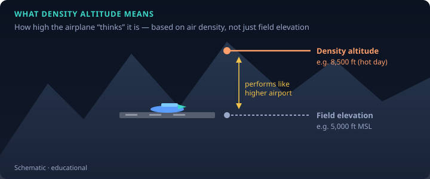
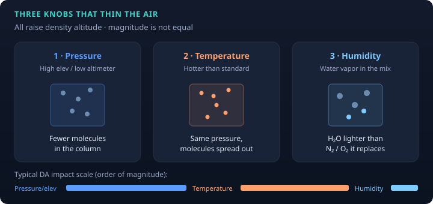
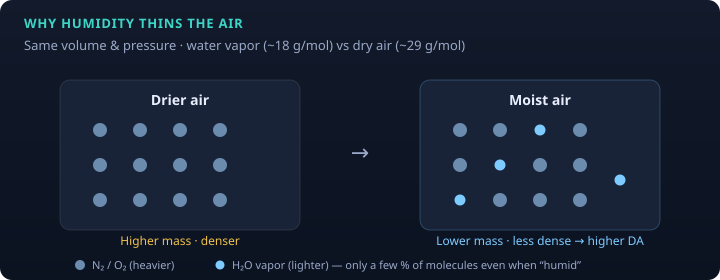
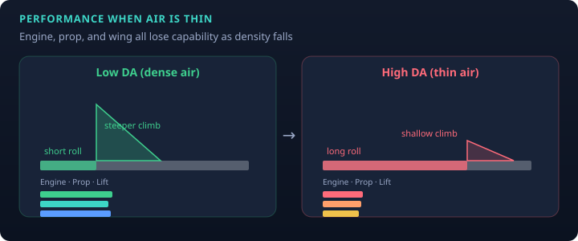
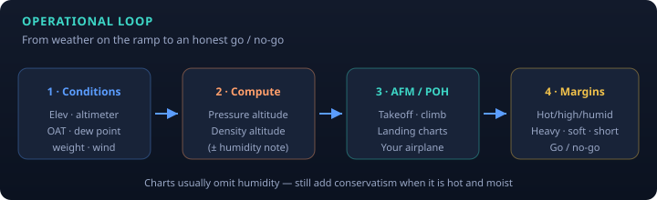

PHAK Ch. 4 & 11 · study note
Density altitude is how pilots talk about “how thin the air is today.” Thin air means less mass for the engine to burn with, less grip for the propeller, and less aerodynamic force from the wing at a given indicated airspeed—so takeoff rolls grow and climb suffers.

In the Pilot’s Handbook of Aeronautical Knowledge, density altitude is pressure altitude corrected for nonstandard temperature. When the atmosphere matches the standard atmosphere at that level, density altitude equals pressure altitude.
Pressure altitude is height above the standard datum plane (29.92 inHg). A common field estimate:
(29.92 − altimeter setting) × 1000 + field elevation

| Factor | Effect | Typical scale |
|---|---|---|
| High elevation / low pressure | Less air mass in the column | Thousands of feet of DA |
| High temperature | Air expands; lower density at a given pressure | Thousands of feet of DA |
| High humidity | Water vapor is lighter than dry air (H₂O ≈ 18 g/mol vs dry air ≈ 29), so moist air is less dense | Usually hundreds of feet |
Mnemonic for the worst combination: hot, high, and humid.

PHAK (Ch. 4 and Ch. 11) states that humidity contributes to density altitude and performance, but is usually not treated as an essential chart input. There is no simple cockpit humidity axis on most light-airplane takeoff charts. Still, expect worse performance when it is both hot and moist.
Safety publications (e.g. FAASTeam density-altitude pamphlet) often suggest adding margin on humid days— for example on the order of +10% takeoff distance—and anticipating a weaker climb. That is a heuristic, not a substitute for the AFM/POH.

Even with the same density altitude, mission outcome changes with:

The interactive lab lets you move the atmosphere knobs (including humidity), then stack weight, wind, and runway factors. Numbers there are educational models—not certified performance.
Open Aircraft Performance Lab →
Figures on this page are original educational schematics (SVG), not scans of FAA handbook art.
← All notes · Bernoulli · Home